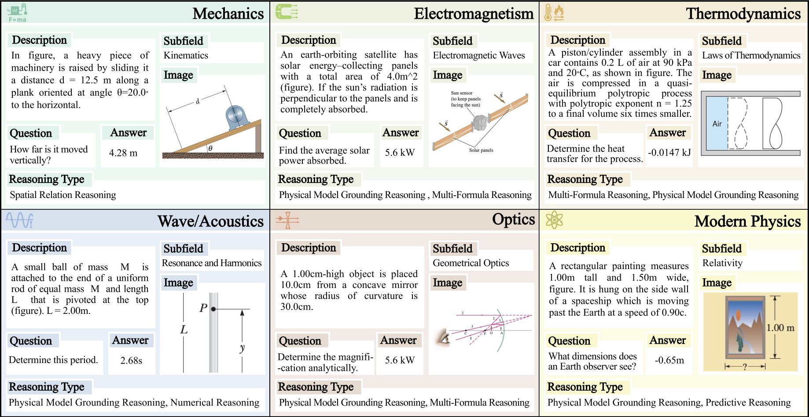
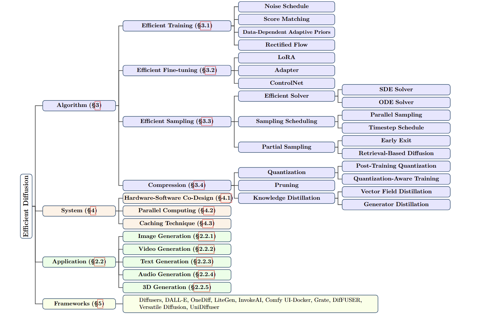

Education
University of Michigan, USA Z. Morley Mao
The Ohio State University, USA Summa Cum Laude Mi Zhang and Prof. Jingbo Meng

PhyX: Does Your Model Have the "Wits" for Physical Reasoning?
Hui Shen ,
Taiqiang Wu,
Qi Han,
Yunta Hsieh,
Jizhou Wang,
Yuyue Zhang,
Yuxin Cheng,
Zijian Hao,
Yuansheng Ni,
Xin Wang,
Zhongwei Wan,
Kai Zhang,
Wendong Xu,
Jing Xiong,
Ping Luo,
Wenhu Chen,
Chaofan Tao,
Z. Morley Mao,
Ngai Wong
Project Page
/
Data
/
Code
/
Paper

Efficient Diffusion Models: A Survey
Hui Shen* ,
Jingxuan Zhang*,
Boning Xiong*,
Rui Hu*,
Shoufa Chen,
Zhongwei Wan,
Xin Wang,
Yu Zhang,
Zixuan Gong,
Guangyin Bao,
Chaofan Tao,
Yongfeng Huang,
Ye Yuan,
Mi Zhang
Transactions on Machine Learning Research (TMLR-2025)
GitHub Repo
/
Paper
Services
Journal Reviewer:
Conference Reviewer:
Media Coverage
Teaching
Teaching Assistant @ The Ohio State University.
Teaching Assistant @ The Ohio State University.